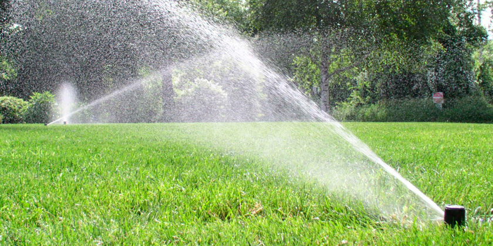

Invierno, con sus bajas temperaturas y vientos fríos, puede ser un momento difícil para los jardineros y sus plantas. Aquí unos Tips para mantener tu jardín en buenas condiciones
Jardín en el Invierno
1) Antes de que el suelo se congele, asegúrate de regar tus plantas. Será mucho más fácil para las plantas absorberlo antes de que la tierra reciba la helada.
2) Utiliza una cubierta o una sábana vieja para cubrir las plantas con capullos o flores abiertas. Por lo general, esto será suficiente para mantener las flores protegidas de la congelación y que no se dañe o se caiga.
3) Protege tus macetas también. No son sólo las plantas de las que debes preocuparte, envuélvela alrededor de la maceta y átalas con hilo impermeable.
4) Procura mantener la temperatura de las raíces de las plantas estables para evitar daños por calentamiento y enfriamientos rápidos.
5) Agrupar las plantas. Esto te ayudará a limitar el daño causado por los fuertes vientos ya que las plantas desacelerarán las ráfagas. Además, manteniéndolas cerca, proporciona mayor aislamiento del frío.
6) Continúa la poda. El hecho de que los árboles y arbustos no tengan hojas no significa que debes parar. Necesitas podar para que puedas deshacerte de las ramas muertas, trombas marinas, y las ramas que se cruzan.
7) No fertilices en invierno. El frío debe ser un momento para el descanso de sus plantas de jardín y, a falta de un mejor término, hibernación.
8) El agua con el que se riega las plantas no debe estar demasiado fría, sino más bien templada. De esta manera, se palian los efectos de las bajas temperaturas y se ayuda a la planta a recuperarse del frío.